무선설비기사 (2020-09-26 기출문제)
1과목: 디지털 전자회로
1. 직류 출력전압이 무부하일 때 250[V]이고 부하일 때 220[V]이다. 이때 정류회로의 전압변동률은?
- 12.6[%]
- 13.6[%]
- 25.2[%]
- 27.2[%]
(정답률: 79%)

2. 다음과 같은 정류회로에 사용된 다이오드의 최대 역전압(PIV)는 10[V]이다. 100[V], 60[Hz]의 피크 정현파가 입력될 때, 정상적인 회로 동작을 보장하기 위한 최대 권선비는? (여기서, n은 1차측 권선비이고 m은 2차측 권선비이다.)
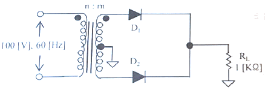
- 10:1
- 1:10
- 1:20
- 20:1
(정답률: 76%)
3. 제너 다이오드의 항복전압이 10[V], 내부저항이 8.5[Ω]이다. 제너 전류가 20[mA]일 때 부하전압은 얼마인가?
- 10.11[V]
- 10.13[V]
- 10.15[V]
- 10.17[V]
(정답률: 73%)
4. 다음 중 증폭기에 대한 설명으로 옳은 것은?
- 교류성분을 직류성분으로 변환하기 위한 전기회로다.
- 다이오드를 사용하여 교류 전압원의 (+) 또는 (-)의 반사이클을 정류하고, 부하에 직류 전압을 흘리도록 한다.
- 교류(AC)를 직류(DC)로 바꾸는 여러 과정 가운데 맥류를 완전한 직류로 바꾸어 준다.
- 입력의 신호변화 형상이 출력단에 확대되어 복사된다.
(정답률: 84%)
5. 다음 중 부궤환 증폭회로의 특징이 아닌 것은?
- 이득 증가
- 비직선 일그러짐 감소
- 잡음 감소
- 안정도 향상
(정답률: 72%)
6. 다음 증폭기에 대한 설명으로 틀린 것은?
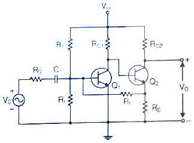
- 병렬전류부궤환 회로이다.
- 입력임피더스는 감소하며 출력임피던스는 증가한다.
- 궤환율 (β)는
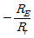
이다. - RE, Rr, RS, RC1이 안정화 되면 TR의 파라미터 변화와 관계없이 안정한 출력이 나온다.
(정답률: 68%)
7. 다음 중 이상적인 연산증폭기의 특성이 아닌 것은?
- 전압증폭도가 무한대
- 입력 임피던스가 무한대
- 출력 임피던스가 무한대
- 주파수 대역폭이 무한대
(정답률: 74%)
8. 증폭기와 정궤환 회로를 이용한 발진회로에서 증폭기의 이득을 A, 궤환율을 β라고 할 때, βA＞1이면 출력되는 파형은 어떤 현상이 발생하는가?
- 출력되는 파형의 진동이 서서히 사라진다.
- 출력되는 파형은 진폭에 클리핑이 일어난다.
- 지속적으로 안정적인 파형이 발생한다.
- 출력되는 파형은 서서히 진폭이 작아진다.
(정답률: 82%)
9. 다음 중 온도 특성이 좋고, 전원이나 부하의 변동에 대하여 비교적 안정도가 좋기 때문에 안정한 주파수의 발생원으로 많이 쓰이는 발진회로는?
- 빈 브리지형 발진회로
- 수정 발진회로
- RC 발진회로
- 이상형 발진회로
(정답률: 86%)
10. 다음 중 RC발진회로에 대한 설명으로 옳은 것은?
- 콘덴서와 저항만으로 궤환회로를 구성한다.
- 압전기 효과를 이용한 발진기이다.
- 종류로는 콜피츠 발진회로와 하틀리 발진회로가 있다.
- 부궤환 시키면 발진 주파수가 증가한다.
(정답률: 72%)
11. 다음 그림과 같은 AM변조 회로는 어떤 변조인가?
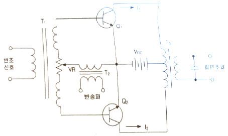
- 베이스 변조회로
- 에미터 변조회로
- 트랜지스터 평형 변조회로
- 컬렉터 변조회로
(정답률: 80%)
12. 다음 중 주파수 변조에서 S/N비를 높이기 위한 방법이 아닌 것은?
- 주파수 대역폭을 크게 한다.
- 변조지수를 크게 한다.
- 프리엠퍼시스 회로를 사용한다.
- 주파수 변별회로를 사용한다.
(정답률: 52%)
13. 진폭변조에서 신호파의 진폭이 70, 반송파의 진폭이 100일 때의 변조도는 몇 [%]인가?
- 20[%]
- 30[%]
- 70[%]
- 100[%]
(정답률: 80%)
14. 다음 중 아날로그 신호를 디지털 신호로 변환할 때 양자화 잡음의 경감 대책이 아닌 것은?
- 압신기를 사용한다.
- 양자화 스텝수를 감소시킨다.
- 양자화 비트수를 증가시킨다.
- 비선형화 한다.
(정답률: 75%)
15. 펄스파에서 낮은 주파수 성분이나 직류분이 잘 통하지 않기 때문에 생기는 것으로 펄스 하강 부분이 낮아진 크기를 무엇이라 하는가?
- 새그(Sag)
- 링깅(Ringing)
- 언더슈트(Undershoot)
- 오버슈트(Overshoot)
(정답률: 71%)
16. 다음 회로의 입력에 정현파를 가했을 때 출력 파형은?
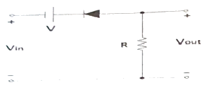
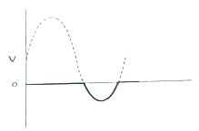
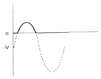
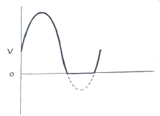
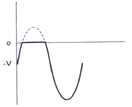
(정답률: 61%)
17. 다음 회로에서 A, B, C를 입력, X를 출력이라고 하면 회로는 어떤 논리 게이트인가? (단, 정논리 회로이다.)
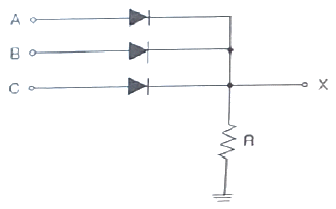
- NAND 게이트
- OR 게이트
- AND 게이트
- NOR 게이트
(정답률: 74%)
18. 입력 주파수 512[kHz]를 T형 플립플롭 7개 종속 접속한 회로에 인가했을 때 출력 주파수는 얼마인가?
- 256[kHz]
- 8[kHz]
- 4[kHz]
- 2[kHz]
(정답률: 73%)
19. 비동기식 5진 카운터(Counter)회로는 최소 몇 개의 플립플롭(Flip-Flop)이 필요한가?
- 4
- 3
- 2
- 1
(정답률: 81%)
20. 조합 논리 회로 중 0과 1의 조합으로 부호화를 행하는 회로로 2n개의 입력선과 n개의 출력 선으로 구성된 것은?
- 디코더(Decoder)
- DEMUX
- MUX
- 인코더(Encoder)
(정답률: 77%)
2과목: 무선통신 기기
21. 정보신호가 m(t)=cos(2πfmt)인 정현파를 반송파 fc를 사용하여 DSB-SC 변조하는 경우 변조된 신호의 스펙트럼으로 옳은 것은?
- fm, f-m, fc, f-c
- fc + fm, -fc, -fm
- fc + fm, fc – fm, -fc + fm, -fc-fm
- fc + fm, fc, fc – fm, -fc + fm, -fc, -fc -fm
(정답률: 76%)
22. 수신 주파수가 850[kHz]이고 국부발진주파수가 1,3⑤[kHz]일 때 영상 주파수는 몇 [kHz]인가?
- 790[kHz]
- 1,020[kHz]
- 1,760[kHz]
- 2,155[kHz]
(정답률: 79%)
23. 진폭변조파의 변조도(m)에 대한 설명 중 틀린 것은?
- 변조도 m=1이면 피변조파(신호파) 전력은 반송파 전력의 1.5배가 된다.
- 변조도 m이 낮을수록 측파대 전력은 감소한다.
- 변조도 m＜1이면 타 통신에 혼신을 준다.
- 변조도 m＞1이면 신호파의 진폭이 찌그러진다.
(정답률: 76%)
24. 변조도 m=1(100[%])인 경우 SSB(Single Side Band) 송신기의 평균 전력은 DSB-LC(Double Side Band – Large Carrier) 송신기 평균 전력에 비해 어느 정도 소요되는가?
- 1/2배
- 1/3배
- 1/4배
- 1/6배
(정답률: 61%)
25. 주파수가 50[kHz]인 정현파 신호를 100[MHz]의 반송파로 주파수 변조하여 최대 주파수 편이가 500[kHz]로 되었을 경우, 발생된 FM 신호의 대역폭과 FM 변조지수는 각각 얼마인가?
- 1,100[kHz], 10
- 1,200[kHz], 15
- 1,500[kHz], 20
- 1,800[kHz], 20
(정답률: 77%)
26. FM변조에서 주파수 편이 kf의 값이 매우 작다면 협대역 FM 변조라 한다. 정보신호의 대역폭을 B라 할 때, 협대역 FM 변조한 신호의 대역폭을 근사화한 값은 얼마인가?
- B
- 2B
- 3B
- 4B
(정답률: 85%)
27. 아래 그림과 같이 FM 변조기를 이용하여 PM 변조를 하고자 한다. 괄호에 들어갈 내용으로 적합한 것을 고르시오.
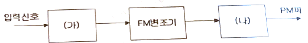
- (가) 없음 (나) 적분기
- (가) 적분기 (나) 없음
- (가) 없음 (나) 미분기
- (가) 미분기 (나) 없음
(정답률: 76%)
28. 2진 ASK(Amplitude Shift Keying) 신호의 전송속도가 1,200[bps]이면 보[baud]속도는 얼마인가?
- 300[baud/초]
- 400[baud/초]
- 600[baud/초]
- 1,200[baud/초]
(정답률: 79%)
29. CPFSK에 대한 설명으로 부적절한 것은?
- 위상이 연속적인 FSK 변조방식이다.
- 1과 0에 각기 다른 주파수를 할당하여 두 개의 신호를 발생시키고, 스위치를 통해 데이터에 따라 신호를 선택하는 방법이다.
- VCO를 사용하여 신호의 주파수를 변경하는 방식으로 신호를 생성할 수 있다.
- CPFSK 신호는 일반 FSK 신호와 비교하여 부대엽(Side Lobe)이 적어지는 장점이 있다.
(정답률: 70%)
30. PSK 변조신호는 정보데이터에 따라 반송파의 무엇을 변경하여 얻는가?
- 주파수
- 위상
- 진폭
- 위상과 진폭
(정답률: 80%)
31. 심볼간격이 T인 펄스신호를 Nyquist 기저대역(Baseband) 채널을 통해 전송하고자 한다. 이 때 요규되는 기저대역 채널대역폭은?
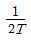
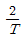
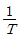
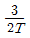
(정답률: 77%)
32. 24채널의 음성신호를 다중화하는 PCM/TDM이 있다. 각 채널은 6[kHz]로 대역제한 되었다고 한다. 10비트 PCM 부호어를 사용한 경우, 필요한 대역폭은 얼마인가?
- 1.44[MHz]
- 2.88[MHz]
- 3.44[MHz]
- 4.88[MHz]
(정답률: 58%)
33. 다음 중 눈다이어그램(Eye Diagram)에 대한 설명으로 틀린 것은?
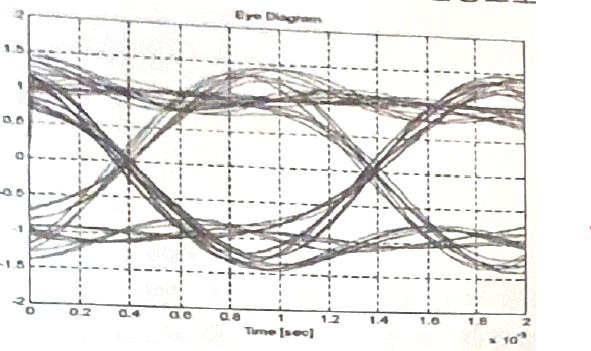
- 데이터 전송과정에서 발생하는 신호의 손상을 그림으로 살펴볼 수 있다.
- 부호간 간섭 또는 잡음이 증가할수록 눈 모양이 더욱 열려 진다.
- 수신된 펄스열을 비트주기 동안 계속 중첩하여 그린 파형이다.
- 수신기에서 1과 0을 판정하기 위하여 신호를 표본화하는 최적의 시간은 바로 눈이 가장 크게 열리는 순간이다.
(정답률: 80%)
34. 다음 중 충전 종료시 축전지의 상태로 옳은 것은?
- 전해액의 비중이 낮아진다.
- 단자 전압이 하강한다.
- 가스(물거품)가 발생한다.
- 전해액의 온도가 낮아진다.
(정답률: 82%)
35. 다음 중 교류성분인 맥동(리플)을 제거함으로써 직류성분만을 얻게 하기 위해 사용하는 회로는 무엇인가?
- 정류회로
- 중계회로
- 평활회로
- 정전압회로
(정답률: 77%)
36. 다음 중 전압 변동 요인으로 보기 어려운 것은?
- 오랜 사용 시간
- 부하 변동
- 교류 입력전압 변동
- 온도에 따른 소자 특성 변화
(정답률: 76%)
37. 다음 중 AM 송신기의 전력측정 방법이 아닌 것은?
- 안테나의 실효 저항에 의한 측정
- 볼로미터 브리지에 의한 전력측정
- 의사안테나를 사용하는 방법
- 전구 부하에 의한 방법
(정답률: 78%)
38. 수신기의 전기적 특성 중 일정 출력을 어느 정도 시간까지 유지할 수 있는가의 성능을 나타내는 것으로 맞는 것은?
- 감도
- 안정도
- 충실도
- 선택도
(정답률: 82%)
39. 축전지 극판에 백색 황산연이 생겼을 때 실시하는 충전방식으로 옳은 것은?
- 초충전
- 속충전
- 부동충전
- 과충전
(정답률: 81%)
40. 다음 중 UPS(Uninterruptible Power Supply)의 구성요소가 아닌 것은?
- 인버터부
- 축전지
- 쵸퍼부
- 동기절체 스위치부
(정답률: 79%)
3과목: 안테나 공학
41. 다음 중 전파의 성질에 관한 설명으로 틀린 것은?
- 전파는 횡파이다.
- 균일 매질 층을 전파하는 전파는 직진한다.
- 굴절률이 다른 매질의 경계면에서는 빛과 같이 굴절과 반사 작용이 있다.
- 주파수가 높을수록 회절 작용이 심하다.
(정답률: 85%)
42. 자유공간에서 단위 면적당 단위 시간에 통과하는 전자파 에너지가 3[W/m2]일 경우 전계강도는 약 얼마인가?
- 8.45[V/m]
- 16.81[V/m]
- 33.63[V/m]
- 45.65[V/m]
(정답률: 79%)
43. 다음 중 전파에 관한 설명으로 옳은 것은?
- 진행 방향에는 전계와 자계가 없고 직각인 방향에만 전계와 자계 성분이 있는 경우를 구면파라고 한다.
- 매질의 종류에 관계없이 속도는 광속과 같다.
- 전파는 종파이다.
- 군속도×위상속도=(광속도)2
(정답률: 83%)
44. 다음 중 급전점의 위치에서 전류의 최대치가 나타나도록 급전하는 방식으로 반파장 다이폴의 중심에서 급전하는 방식은?
- 비동조 급전
- 동조 급전
- 전류 급전
- 전압 급전
(정답률: 70%)
45. 특성 임피던스가 Z0인 선로에 부하 임피던스 ZL이 연결되었을 때 부하단에서 1/4떨어진 선로상의 점에서 부하를 바라본 임피던스는?
- ZL/Z0
- Z0/ZL
- Z02/ZL
- ZL2/Z0
(정답률: 71%)
46. 무손실 전송선로의 특성 임피던스(Z0)는?
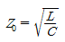
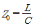
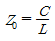
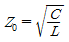
(정답률: 83%)
47. 다음 중 정재파에 대한 설명으로 틀린 것은?
- 진행파와 반사파가 합성된 파를 말한다.
- 전압 분포상태가 (λ/2)거리마다 최대치가 있다.
- 전압·전류의 위상은 선로상의 각 점에 따라 서로 다르다.
- 진행파와 비교할 때 전송손실이 크다.
(정답률: 69%)
48. 다음 중 급전선과 안테나 사이에 임피던스 정합을 하는 이유로 적합하지 않은 것은?
- 최대 전력을 전송한다.
- 급전선에서의 손실 증가를 방지한다.
- 정재파비를 크게 한다.
- 부정합 손실이 적다.
(정답률: 80%)
49. 미소다이폴을 수직으로 놓았을 때 수평면의 지향성 계수는?
- 1
- 1.5
- 2
- 2.5
(정답률: 72%)
50. 소형 단일 권선 원형 루프 안테나의 반경이 0.2[m]인 구리선으로 만들어져 있으며, 구리선의 반경은 4×10-4[m], 구리선의 도전율은 5.7×107[S/m]이다. 안테나가 주파수 1[MHz]에서 동작할 때 안테나의 인덕턴스를 계산하면?
- 약 1.645[μH]
- 약 1.845[μH]
- 약 2.045[μH]
- 약 2.245[μH]
(정답률: 47%)
51. 전송선로의 특성에 의한 분류 중 전자계모드의 분류로 틀린 것은?
- 평형형
- 동조형
- 도파관형
- 불평형형
(정답률: 63%)
52. 다음 중 원정관에 의해 얻는 효과로 옳은 것은?
- 정상 부근 전류가 감소하므로 실효고 증대
- 고유주파수의 저하 즉, 고유파장의 증가
- 복사 저항의 감소로 효율 증가
- 비교적 높은 안테나로 수평면내 예민한 지향특성
(정답률: 57%)
53. 다음 중 주로 초단파대역에서 사용되는 안테나는 무엇인가?
- Whip 안테나
- 전자나팔 안테나
- 파라볼라 안테나
- 빔 안테나
(정답률: 69%)
54. 다음 중 평형형 동조 급전선을 사용하는 안테나는?
- 제펠린(Zeppeline) 안테나
- 롬빅(Rhombic) 안테나
- 빔(Beam) 안테나
- 웨이브(Wave) 안테나
(정답률: 65%)
55. 마이크로파 대역에서 주로 사용하는 지상파는?
- 지표파
- 직접파
- 대지 반사파
- 회절파
(정답률: 68%)
56. 등가지구 반경계수가 K일 때 송수신 안테나간의 기하학적 가시거리(d1)와 전파 가시거리(d2)의 관계를 바르게 나타낸 것은?
- d2=Kd1
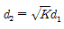
- d2=(1/K)d1
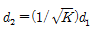
(정답률: 78%)
57. 다음 중 대류권전파에서 라디오덕트가 생성되는 조건에 대한 표현으로 옳은 것은? (단, M: 수정굴절율, h:송신안테나 높이)
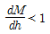
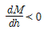
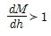
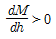
(정답률: 76%)
58. 다음 중 극초단파(UHF) 신호의 통달거리에 큰 영향을 주지 않는 것은?
- 공전잡음
- 지형
- 복사전력
- 안테나 높이
(정답률: 70%)
59. 다음 중 전파 잡음에 대한 설명으로 틀린 것은?
- 자연계에서 발생하는 잡음은 우주잡음과 공전잡음이 있다.
- 번개에 의한 뇌방전 잡음은 공전잡음에 해당한다.
- 고주파 가열장치에서 나오는 잡음은 자연잡음이다.
- 태양의 흑점 폭발에 의해서도 잡음이 발생한다.
(정답률: 79%)
60. 다음 중 전자파장해(EMI)에 대한 설명으로 틀린 것은?
- 전자파장해 또는 전자파간섭이라고 하며 전자기기로부터 부수적으로 발생되는 불필요한 전자파가 공간으로 방사된다.
- 전원선을 통해 전도되어 해당기기 자체나 통신망 및 다른 전기 전자기기에 전자기적 장해를 유발시킨다.
- 전자파를 발생시키는 기기가 다른 기기의 성능에 영향을 주지 않도록 전자파가 방사 또는 전도되는 것을 제한한다.
- 전자파보호, 전자파내성 또는 전자파 민감성이라 하며 전자파 방해가 존재하는 환경에서 기기, 장치 또는 시스템이 성능의 저하 없이 동작할 수 있다.
(정답률: 72%)
4과목: 무선통신 시스템
61. 다음 중 FM 송신기에서 사용되는 순시주파수편이제어(IDC) 회로에 대한 설명으로 옳은 것은?
- FM 변조하기 전에 신호파의 높은 주파수 성분을 강조시키는 회로이다.
- 위상변조를 등가주파수 변조로 만들기 위하여 사용되는 회로로서 적분회로의 일종이다.
- 최대주파수 편이를 제한하기 위하여 사용되는 회로이다.
- 적분회로, 클리퍼 및 저역 통과 필터로 구성된다.
(정답률: 70%)
62. 데이터 속도 4800[bps]인 모뎀에서 4진 PSK를 사용할 때 심볼속도는?
- 2400[bps]
- 2400[baud]
- 4800[bps]
- 4800[baud]
(정답률: 77%)
63. 다음 중 무선 통신 방식에 해당되지 않는 것은?
- 고정 통신
- 이동 통신
- 부가 통신
- 위성 통신
(정답률: 75%)
64. 다음 중 송신측에서 콘볼루션 채널 코딩률을 결정할 때, 수신자의 전파 상태가 좋은 경우 가장 많은 정보 비트를 보낼 수 있는 코딩률은? (단, CC:Convolution Code)
- 4/5 CC
- 3/5 CC
- 2/5 CC
- 1/5 CC
(정답률: 81%)
65. 다음 중 위성 통신의 특성이 아닌 것은?
- 지상 재해의 영향을 받지 않는다.
- 전송 지연이 없고 반향 효과가 적은 장점이 있다.
- 원거리 멀티포인트 통신이 가능하다.
- 대용량 전송 및 고속 통신이 가능하다.
(정답률: 79%)
66. 정지 위성을 중계국으로 하는 지구국의 설비는 안테나와 통신 장치가 필요하다. 이때 이들 기기들을 배치하는 방식은 신호의 전송 형식으로부터 분류되는데 사용되는 전송 방식이 아닌 것은?
- 마이크로파 전송 방식
- 간접 결합 방식
- 베이스밴드 전송 방식
- 중간주파수(IF) 전송 방식
(정답률: 58%)
67. 다음 중 셀룰러 방식에서 기지국의 서비스 지역을 확대시키는 방법이 아닌 것은?
- 다이버시티 수신기 사용
- 송신 출력의 증가
- 기지국 안테나 높이의 증가
- 수신기의 수신 한계 레벨을 높게 조정
(정답률: 61%)
68. 다음 표에서 정의하는 기술은 무엇인가?
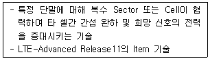
- CoMP
- Carrier Aggregation
- MIMO
- VoLTE
(정답률: 64%)
69. 다음 중 국가재난안전통신망인 PS-LTE의 기능 요구사항으로 틀린 것은?
- 그룹간 통신기술
- 단말간 직접통신기술
- 단독기지국 운용기술
- 전국 단일셀 지원기술
(정답률: 67%)
70. DS(Direct Sequence)는 코드분할다중접속(CDMA)을 구현하기 위해 사용되는 대역확산 통신방식 중의 하나이다. 다음 중 DS방식을 수행하기 위해 필요한 구성요소가 아닌 것은?
- PSK(Phase Shift Keying) 변조기
- 상관검파기
- 주파수합성기
- PN(Pseudo Noise)부호 발생기
(정답률: 66%)
71. 우리나라의 지상파 DMB에 할당된 주파수 대역과, 한 채널당 사용가능한 주파수 블록 개수가 맞게 짝지어진 것은?
- VHF, 2개
- VHF, 3개
- UHF, 4개
- UHF, 5개
(정답률: 77%)
72. 다음 중 무선 LAN의 특징으로 틀린 것은?
- 복잡한 배선이 필요 없다.
- 단말기의 재배치가 용이하다.
- 일반적으로 유선 LAN에 비하여 상대적으로 높은 전송속도를 낸다.
- 신호간섭이 발생할 수 있다.
(정답률: 83%)
73. 다음 중 프로토콜 스택 기능으로서 통신프로토콜 S/W에서 필요로 하는 기본 기능을 Library로 제공하며 프로세스 상호간의 통신을 지원하는 것은 무엇인가?
- Micro Controller
- RTOS
- Protocol Stack
- Middle Ware
(정답률: 63%)
74. 다음 중 통신상의 목적으로 다른 전송제어 문자와 조합하여 의미를 다양화 하는 투명문자는?
- EOT
- DLE
- SYN
- NAK
(정답률: 66%)
75. 다음 중 통신망의 계층구조에 대한 설명으로 틀린 것은?
- 하나의 계층은 소프트웨어 관점에서 하나의 모듈에만 해당된다.
- 계층은 물리적인 단위가 아니다.
- 통신이 성립하려면 대상 시스템의 같은 계층끼리 프로토콜이 준수되어야 한다.
- ISO에서 일곱 계층으로 나누어진 참조모델을 제안했다.
(정답률: 79%)
76. 다음 기술 중 2.4[GHz] 대역폭을 사용하며, 50m 거리 내에 있는 최대 127개 까지의 기기간을 연결하는 홈 RF 네트워크 기술은?
- IEEE 1394
- IEEE 802.3
- Bluetooth
- SWAP
(정답률: 70%)
77. 다음 중 전파의 회절 현상에 대한 설명으로 틀린 것은?
- 파장이 길수록 적게 일어난다.
- 주파수가 낮을수록 많이 일어난다.
- 중/장파 대역에서 많이 일어난다.
- 초단파 대역에서도 발생할 수 있다.
(정답률: 73%)
78. 다음 표에서 정의하는 것은 무엇인가?
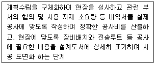
- 계획설계
- 기본설계
- 실시설계
- 사전설계
(정답률: 70%)
79. 다음 중 무선통신시스템 설치 구축공사의 착공 전 검토 사항이 아닌 것은?
- 감리원의 공정별 입회에 대한 확인
- 시공하기 전에 설계도서와 현장의 일치 여부를 확인
- 설계도서에 맞게 장비의 입고 일정과 일치 여부 검토
- 이동통신시스템 장비를 작동하는데 필요한 전원설비 및 냉방기 시설 검토
(정답률: 74%)
80. 다음 중 Redundancy Architecture에 대한 설명으로 틀린 것은?
- Active Redundancy는 결함 발견 후 H/W, S/W를 새로 교체하는 것이다.
- H/W Redundancy는 S/W가 단순하고, 빠른 결함 탐지와 복구가 가능하다.
- S/W Redundancy는 복구에 시간이 걸리지만 비용이 저렴하여 주된 복구 수단으로 사용된다.
- Passive Redundancy는 여러 Redundant Elements에 의해 제공된다.
(정답률: 71%)
5과목: 전자계산기 일반 및 무선설비기준
81. 다음 중 입출력 프로세서(I/O Processor)의 기능으로 틀린 것은?
- 컴퓨터 내부에 설치된 입출력 시스템은 중앙처리장치의 제어에 의하여 동작이 수행된다.
- 중앙처리장치의 입출력에 대한 접속 업무를 대신 전담하는 장치이다.
- 중앙처리장치와 인터페이스 사이에 전용 입출력 프로세서(IOP;I/O Processor)를 설치하여 많은 입출력장치를 관리한다.
- 중앙처리장치와 버스(Bus)를 통하여 접속되므로 속도가 매우 느리다.
(정답률: 80%)
82. 입력장치에서 대량의 데이터를 전송하기 위해, 중앙처리장치(CPU)가 직접 기억장치 액세스(DMA, Direct Memory Access) 장치에 전달하는 정보로 틀린 것은?
- 전송할 워드(Word) 수
- 입력장치의 주소
- 작동할 연산(Operation) 수
- 데이터를 저장할 주기억장치의 시작 주소
(정답률: 65%)
83. 중앙 연산 처리 장치에서 마이크로 동작(Micro-Operation)이 순서적으로 일어나게 하려면 무엇이 필요한가?
- 스위치(Switch)
- 레지스터(Register)
- 누산기(Accumulator)
- 제어신호(Control Signal)
(정답률: 65%)
84. 10진수 56789에 대한 BCD코드(Binary Coded Decimal)는 어느 것인가?
- 0101 0110 0111 1000 1001
- 0011 0110 0111 1000 1001
- 0111 0110 0111 1000 1001
- 1001 0110 0111 1000 1001
(정답률: 78%)
85. 다음 중 제일 먼저 삽입된 데이터가 제일 먼저 출력되는 파일구조는?
- 스택(Stack)
- 큐(Queue)
- 리스트(List)
- 트리(Tree)
(정답률: 75%)
86. 다음 보기의 기억장치 중 속도가 가장 빠른 것에서 느린 순서대로 나열한 것으로 맞는 것은?
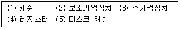
- (4)-(3)-(1)-(5)-(2)
- (4)-(5)-(3)-(1)-(2)
- (4)-(1)-(3)-(5)-(2)
- (4)-(5)-(1)-(3)-(2)
(정답률: 77%)
87. 다음 중 분산 처리 시스템에 대한 설명으로 틀린 것은?
- 사용자들이 여러 지역의 자원과 정보를 마치 자신의 시스템 내부자원처럼 편리하게 사용한다.
- 지역적으로 분산된 여러 대의 컴퓨터가 프로세서 사이의 특별한 데이터 링크를 통하여 교신하면서 동일한 업무를 수행한다.
- 접속된 모든 단말 장치에 CPU의 사용시간을 일정한 간격으로 차례로 할당한다.
- 자원의 공유, 신뢰성 향상, 계산속도 증가 등의 특징을 가진다.
(정답률: 66%)
88. 다음 중 프로그램의 종류에 대한 설명으로 틀린 것은?
- 베타버전이란 개발자가 상용화하기 전에 테스트용으로 배포하는 것을 말한다.
- 쉐어웨어란 기간이나 기능 제한 없이 무료로 사용하는 것을 말한다.
- 데모버전이란 기간이나 기능의 제한을 두고 무료로 사용하는 것을 말한다.
- 테스트버전이란 데모버전이전에 오류를 찾기 위해 배포하는 것을 말한다.
(정답률: 78%)
89. 다음 중 JAVA 언어의 특징이 아닌 것은?
- 범용 프로그램
- 비독립적 플랫폼
- 분산자원에 접근 용이
- 객체 지향적 언어
(정답률: 78%)
90. 다음 중 프로그램 카운터와 명령의 번지부분을 더해 유효번지로 결정하는 주소 지정 방식은?
- 즉각 주소 지정 방식(Immediate Addressing Mode)
- 간접 지정 주소 방식(Indirect Addressing Mode)
- 직접 주소 지정 방식(Direct Addressing Mode)
- 상대 주소 지정 방식(Relative Addressing Mode)
(정답률: 58%)
91. 항공법에서 규정한 경량항공기의 의무 항공기국은 정기검사 유효기간이 얼마인가?
- 1년
- 2년
- 3년
- 4년
(정답률: 68%)
92. VHF대의 주파수범위는?
- 3[MHz] 초과 30[MHz]이하
- 30[MHz] 초과 300[MHz]이하
- 3[GHz] 초과 30[GHz]이하
- 3[GHz] 초과 300[GHz]이하
(정답률: 76%)
93. 다음 중 적합인증대상 기자재는?
- 자동차 및 불꽃점화 엔진구동 기기류
- 방송수신기기 및 관련 기기류
- 고주파전류를 이용하는 의료용설비의 기기
- 형광등 등 조명기기류
(정답률: 75%)
94. 다음 중 방송통신기자재 지정시험기관이 발생한 시험성적서의 기재사항이 아닌 것은?
- 시험신청인의 성명 및 주소
- 시험성적서 발급번호 및 페이지 일련번호
- 시험결과에 대한 담당 시험원의 의견
- 품질책임자의 의견 및 서명
(정답률: 71%)
95. 다음 중 안테나계가 갖추어야 할 조건이 아닌 것은?
- 안테나는 무선설비를 작동할 수 있는 최소 안테나이득을 가질것
- 내부잡음이 클 것
- 정합은 신호의 반사손실이 최소화되도록 할 것
- 지향성은 복사되는 전력이 목표하는 방향을 벗어나지 아니하도록 안정적일 것
(정답률: 82%)
96. 다음 중 송신설비의 전력을 규격전력으로 표시하지 않는 무선설비는?
- 아마추어국의 송신설비
- 실험국의 송신설비
- 생존정에 사용되는 비상위치지시용 무선표지설비
- 항공이동업무 무선설비의 송신설비
(정답률: 55%)
97. 전파형식이 R3E, H3E, J3E인 무선국의 무선설비 점유주파수대역폭 허용치는?
- 500[Hz]
- 1[kHz]
- 3[kHz]
- 6[kHz]
(정답률: 79%)
98. 간이 무선국의 무선 설비에서 송신 안테나의 높이는 수평면 지향성이 없는 경우 지상과 얼마 이하가 되어야 하는가?
- 70[m]
- 60[m]
- 40[m]
- 30[m]
(정답률: 69%)
99. 전력선통신설비와 유도식통신설비의 주파수허용편차는?
- 0.1[%]
- 0.3[%]
- 0.5[%]
- 1[%]
(정답률: 70%)
100. 다음 무선설비의 안전시설에 대한 설명으로 가장 적합한 것은?
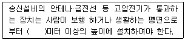
- 1.5
- 2
- 2.5
- 3
(정답률: 80%)